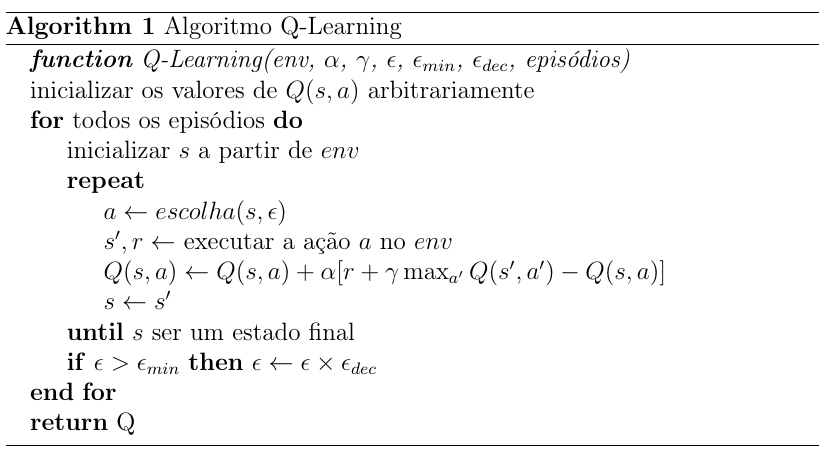

Deep Reinforcement Learning
Segundo Mnih,2013, desenvolver agentes que aprendem a atuar em um ambiente de alta dimensionalidade sempre foi um desafio para soluções baseadas em aprendizagem por reforço. Até 2013, a maioria das aplicações de aprendizagem por reforço operavam nestes domínios com base em atributos determinados manualmente pelo projetista.
Em Mnih,2013 os autores do artigo propõe uma variante do algoritmo Q-Learning (Watkins,1992) onde os pesos de uma rede neural são treinados no lugar de uma Q-table.
Q-Learning
Na figura abaixo é apresentado o pseudo-código do algoritmo Q-Learning. Neste pseudo-código é possível ver como os pares Q(s,a) são atualizados repetidas vezes através nas inúmeras interações do agente com o ambiente.

A versão em Python para este pseudo-código é bem direta:
def train(self):
for i in range(1, self.episodes+1):
(state,_) = self.env.reset()
reward = 0
done = False
while not done:
action = self.select_action(state)
next_state, reward, done, _, _ = self.env.step(action)
# ajustando os valores da q-table
old_value = self.q_table[state, action]
next_max = np.max(self.q_table[next_state])
new_value = old_value + self.alpha * (reward + self.gamma * next_max - old_value)
self.q_table[state, action] = new_value
state = next_state
if self.epsilon > self.epsilon_min:
self.epsilon = self.epsilon * self.epsilon_dec
# persistindo a q-table
savetxt(filename, self.q_table, delimiter=',')
return self.q_table
Incluindo o método para seleção (e-greedy) da ação durante a etapa de treinamento:
def select_action(self, state):
rv = random.uniform(0, 1)
if rv < self.epsilon:
return self.env.action_space.sample() # explorando o espaco
return np.argmax(self.q_table[state]) # utilizando os valores aprendidos
Quando S e A são conjuntos finitos e não tão grandes então é fácil a utilização do algoritmo Q-Learning para determinar os valores de uma tabela 2D. Por exemplo, considere os ambientes do TaxiDriver e BlackJack:
>>> import gym
>>> env = gym.make("Taxi-v3").env
>>> env.action_space
Discrete(6)
>>> env.observation_space
Discrete(500)
>>>
>>> env = gym.make("Blackjack-v1")
>>> env.action_space
Discrete(2)
>>> env.observation_space
Tuple(Discrete(32), Discrete(11), Discrete(2))
No caso do TaxiDriver, teremos uma tabela de 500 estados versus 6 ações. E no caso do BlackJack, teremos uma tabela de 704 (32 * 11 * 2) estados versus 2 ações.
Em algumas situações a descrição dos estados é contínua. Por exemplo, no caso do MountainCar o estado é representado pela posição do carro no eixo X e a sua velocidade. Ambos os valores são contínuos, como pode ser visto abaixo:
>>> env = gym.make('MountainCar-v0').env
>>> env.observation_space
Box([-1.2 -0.07], [0.6 0.07], (2,), float32)
>>> env.action_space
Discrete(3)
Neste caso, uma abordagem possível é discretizar estes valores como feito abaixo:
>>> num_states = (env.observation_space.high - env.observation_space.low)*np.array([10, 100])
>>> num_states = np.round(num_states, 0).astype(int) + 1
>>> num_states
array([19, 15])
Assim, para este caso temos uma tabela 3D com as seguintes dimensões 19 x 15 x 3. Claro que neste caso a implementação terá que sofrer alguns ajustes.
No entanto, outros ambientes podem ter um espaço de estados ainda mais complexo, como por exemplo: CartPole, LunarLander e os ambientes do Atari.
>>> env = gym.make('CartPole-v0').env
>>> env.observation_space
Box([-4.8000002e+00 -3.4028235e+38 -4.1887903e-01 -3.4028235e+38], [4.8000002e+00 3.4028235e+38 4.1887903e-01 3.4028235e+38], (4,), float32)
>>> env = gym.make('LunarLander-v2').env
>>> env.observation_space
Box(-inf, inf, (8,), float32)
>>> env.action_space
Discrete(4)
No caso dos ambientes do Atari tem-se uma representação correspondente a imagens RGB. Quanto mais complexa a representação dos estados, mais difícil é a identificação correta e codificação dos atributos para gerar a Q-table. Então, por que não deixar esta tarefa a cargo de uma rede neural?
Deep Reinforcement Learning

Para implementar a versão proposta por Mnih,2013 podemos usar uma rede neural qualquer, como a definida abaixo:
model = Sequential()
model.add(Dense(512, activation=relu, input_dim=env.observation_space.shape[0]))
model.add(Dense(256, activation=relu))
model.add(Dense(env.action_space.n, activation=linear))
No entanto, dois itens são importantes:
- o número de entradas é o tamanho do espaço de observação, e;
- o número de saídas é igual ao número de ações.
Porque o objetivo desta rede neural é identificar a melhor ação para um determinado estado. A seleção da melhor ação acontece desta maneira:
action = self.model.predict(state)
return np.argmax(action[0])
action[0] é um vetor com o tamanho igual as ações que o agente sabe executar.
Desta forma, a função e-greedy é definida de tal forma:
def select_action(self, state):
if np.random.rand() < self.epsilon:
return random.randrange(self.env.action_space.n)
action = self.model.predict(state)
return np.argmax(action[0])
Experience replay
Mnih,2013 propõe o uso de uma técnica chamada experience replay, que consiste em armazenar as experiências do agente em cada momento \(e_{t} = (s_{t}, a_{t}, r_{t}, s_{t+1})\) em um dataset \(D = e_{1}, \cdots, e_{N}\).
Aprender diretamente a partir de exemplos consecutivos é ineficiente devido a alta correlação entre os exemplos. Desta forma, o treinamento do modelo considera uma amostra aleatória retirada de \(D\).
A criação do dataset \(D\) pode ser feita desta forma:
def experience(self, state, action, reward, next_state, terminal):
self.memory.append((state, action, reward, next_state, terminal))
E o experience replay desta forma:
def experience_replay(self):
# soh inicia o processo antes de ter uma memoria minima
if len(self.memory) > self.batch_size:
# faz a escolha aleatoria dos exemplos
batch = random.sample(self.memory, self.batch_size)
states = np.array([i[0] for i in batch])
actions = np.array([i[1] for i in batch])
rewards = np.array([i[2] for i in batch])
next_states = np.array([i[3] for i in batch])
terminals = np.array([i[4] for i in batch])
# np.squeeze(): Remove single-dimensional entries from the shape of an array.
# Para se adequar ao input
states = np.squeeze(states)
next_states = np.squeeze(next_states)
# usando o modelo para selecionar o valor das melhores acoes
next_max = np.amax(self.model.predict_on_batch(next_states), axis=1)
targets = rewards + self.gamma * (next_max) * (1 - terminals)
targets_full = self.model.predict_on_batch(states)
indexes = np.array([i for i in range(self.batch_size)])
targets_full[[indexes], [actions]] = targets
# recalculando os pesos da rede
self.model.fit(states, targets_full, epochs=1, verbose=0)
if self.epsilon > self.epsilon_min:
self.epsilon *= self.epsilon_dec
Preste atenção neste update da rede neural:
targets = rewards + self.gamma * (next_max) * (1 - terminals)
O pseudo-código que define esta forma de atualização está na página 5 em Mnih,2013.
O loop principal de treinamento tem este comportamento:
def train(self, max_steps):
rewards = []
for i in range(self.episodes+1):
state = self.env.reset()
state = np.reshape(state, (1, self.env.observation_space.shape[0]))
score = 0
for _ in range(max_steps):
action = self.select_action(state)
self.env.render()
next_state, reward, terminal, _ = self.env.step(action)
score += reward
next_state = np.reshape(next_state, (1, self.env.observation_space.shape[0]))
self.experience(state, action, reward, next_state, terminal)
state = next_state
self.experience_replay()
if terminal:
print(f'Episódio: {i+1}/{self.episodes}. Score: {score}')
break
rewards.append(score)
return rewards
Exemplo de uso: CartPole
Podemos verificar o funcionamento deste algoritmo com o ambiente CartPole da biblioteca Gymnasium executando:
python CarPole.py
Para a execução deste arquivo serão necessários os arquivos: * CartPole.py * DeepQLearning.py
O resultado desta execução irá gerar o arquivo cartpole_DeepQLearning.jpg dentro da pasta results. Espera-se que o
resultado encontrado seja similar a este:
Importante: Antes de executar o arquivo CarPole.py você vai ter que instalar o pacote tensorflow visto que agora a implementação está usando tensorflow e keras.
Será que este agente conseguiu aprender a controlar o CartPole?
Uma forma de testar isto é executando um script que faz uso da rede neural treinada:
python CartPole_trained.py